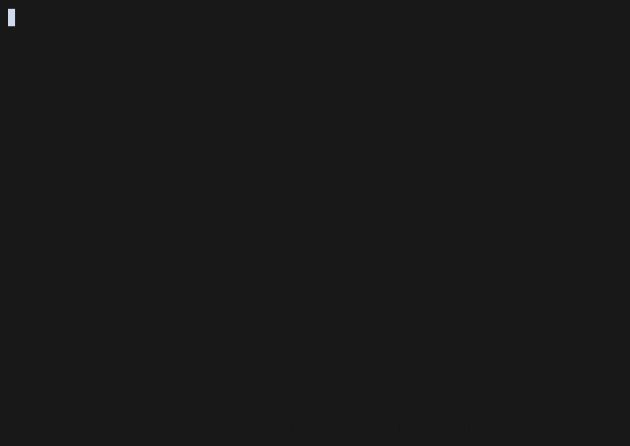
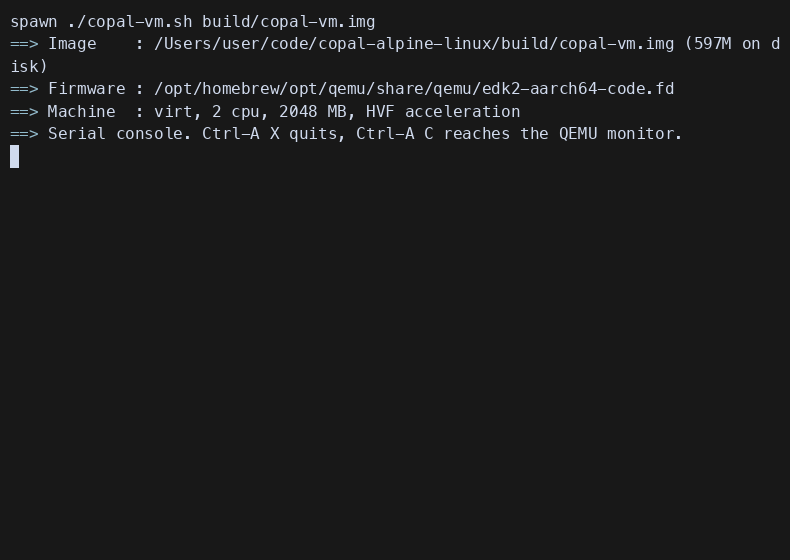

<title>Copal Linux</title>
<meta name="description" content="Copal Linux — one Alpine installer for a Raspberry Pi, a PC, or a VM. Sixteen re-runnable stages, a keyboard-driven tiling desktop, and the Linux Antiquity theme.">
<link rel="preconnect" href="https://fonts.googleapis.com">
<link rel="preconnect" href="https://fonts.gstatic.com" crossorigin>
<link rel="stylesheet" href="https://fonts.googleapis.com/css2?family=Cormorant+Garamond:ital,wght@0,300;0,400;0,600;1,300;1,400&family=JetBrains+Mono:wght@400;500;700&display=swap">

<style>
/* ===========================================================================
   COPAL LINUX — docs/index.html
   SPDX-License-Identifier: MIT   Copyright (c) 2026 paulr@sdf.org

   ONE VISUAL WORLD, DELIBERATELY -- an engraved plate. This page commits to
   a single theme rather than answering prefers-color-scheme, and every colour
   is painted explicitly from a token below, so nothing is inherited from the
   host and the page holds whatever ground it lands on.

   THE PALETTE IS NOT INVENTED HERE. It is diinki's Linux Antiquity "helios"
   scheme, read out of configs/quickshell/Config.qml in the vendored theme.

   BLACK IS THE KEY, NOT THE FIELD. An earlier draft set this page on a black
   ground and it read as a void with text on it -- which is not what the theme
   looks like. The artwork in Antiquity is drawn the other way round: amber
   discs on warm paper, every one of them struck with a black `cbodyStroke`
   outline. So black here does only what a key plate does -- frames, rules,
   keycaps, the hard offset shadow under a card -- and the paper carries the
   page. Depth is three paper tones and a hard black shadow, never a blur:
   this is printing, not glass.
   ======================================================================== */
:root {
  /* THE GROUND IS PAPER, AND BLACK IS THE KEY.
     Antiquity's helios scheme has two halves. The dark half is the shell
     chrome; the half that actually carries the artwork is the one the
     celestial bodies are drawn on -- `glassTintColor` #fce2ab and
     `cbodyBackground` #fccf8a, struck with a black `cbodyStroke` outline.
     That is an engraved plate: aged paper, amber wash, and black doing the
     work of every line. This page is set on that half. Black appears only
     where a line belongs -- frames, rules, keycaps, the plate shadow -- and
     never as a field. */
  --paper:        #f2e3c0;  /* the ground: aged, warm, never white          */
  --paper-raised: #fce2ab;  /* Antiquity `glassTintColor` -- cards on top   */
  --paper-deep:   #e7d5a6;  /* the layer below the page: wells, transcripts */
  --paper-edge:   #dcc793;  /* the deepest tone -- shadow side of a fold    */

  --ink-key:      #121212;  /* Antiquity `outline`. Every frame and rule.   */
  --ink-body:     #1b1710;  /* reading colour: ink, very slightly warm      */
  --ink-dim:      #6d6047;  /* secondary text; still 6:1 on --paper         */

  --gold:         #8a6320;  /* the accent AS TEXT -- dark enough to read    */
  --resin:        #fccf8a;  /* Antiquity `accent` AS FILL -- discs, washes  */
  --resin-deep:   #87704f;  /* Antiquity `accentDark` -- labels, hairlines  */
  --celestial:    #565c85;  /* Antiquity `cbodyMainMenu`, deepened to read  */
  --ember:        #bf3f14;  /* Antiquity `urgent`, taken down onto paper    */

  --measure:    58rem;
  --step:       clamp(.9rem, .86rem + .18vw, 1rem);

  color-scheme: light;
}

*, *::before, *::after { box-sizing: border-box; }

body {
  margin: 0;
  padding: 0 1.25rem 6rem;
  /* Explicit, always: the artifact host paints its own ground behind this
     page, and a transparent body would borrow it. */
  background: var(--paper);
  color: var(--ink-body);
  font: var(--step)/1.65 "JetBrains Mono", ui-monospace, "SF Mono", Menlo, monospace;
  -webkit-font-smoothing: antialiased;
}

main { max-width: var(--measure); margin: 0 auto; }

/* --- type scale ---------------------------------------------------------
   Cormorant Garamond carries every display line: an engraved face from the
   era of the illustrations this theme is drawn from. JetBrains Mono carries
   everything operational -- and is the same face stage 16 substitutes into
   kitty.conf on the installed machine, which is the sort of rhyme worth
   having. Nothing on this page is set in a third family. */
.display {
  font-family: "Cormorant Garamond", "Iowan Old Style", Georgia, serif;
  font-weight: 300;
  text-wrap: balance;
}

h2 {
  font-size: 1rem; font-weight: 700; letter-spacing: .16em;
  text-transform: uppercase; color: var(--gold);
  margin: 4.5rem 0 1.25rem; padding-bottom: .5rem;
  border-bottom: 1px solid var(--ink-key);
  scroll-margin-top: 1.5rem;
}
/* The section's index, not decoration: these sections ARE the order the
   install runs in, and the numeral says so. */
h2 .idx {
  color: var(--resin-deep); font-weight: 400;
  margin-right: .75rem; font-variant-numeric: tabular-nums;
}

h3 {
  font-size: .95rem; font-weight: 700; letter-spacing: .04em;
  color: var(--ink-body); margin: 2rem 0 .5rem;
}

p { margin: 0 0 1rem; max-width: 62ch; }
a { color: var(--gold); text-decoration-color: var(--resin-deep); text-underline-offset: .2em; }
a:hover { color: var(--ember); }
a:focus-visible, button:focus-visible {
  outline: 2px solid var(--ink-key); outline-offset: 3px;
}
strong { color: var(--ink-body); font-weight: 700; }
code {
  font-family: inherit; font-size: .92em;
  color: var(--gold); background: var(--paper-deep);
  padding: .1em .4em; border: 1px solid var(--ink-key);
}

/* ===================== THE HERO =========================================
   The orbit is the thesis. In this desktop a workspace is a planet on a
   curve and the active one grows flares -- so the page opens on the actual
   mechanism rather than a screenshot of it. Canvas, not hand-authored SVG
   path data, because the arc is computed. */
header { padding: 5rem 0 1rem; position: relative; }

#orbit {
  display: block; width: 100%; height: 190px;
  margin: 0 0 2.5rem;
}

.wordmark {
  font-size: clamp(3.2rem, 13vw, 7rem);
  line-height: .88; letter-spacing: .02em;
  margin: 0 0 .75rem; color: var(--ink-key);
  font-weight: 300;
}
.wordmark em {
  font-style: italic; color: var(--ink-body);
  font-size: .42em; letter-spacing: .04em;
  display: block; margin-top: .9rem;
}

.thesis {
  font-size: clamp(1.15rem, .95rem + .9vw, 1.6rem);
  line-height: 1.45; color: var(--ink-body);
  max-width: 34ch; margin: 0 0 1.75rem;
}
.thesis b { color: var(--gold); font-weight: 400; }

.resin-note {
  border-left: 2px solid var(--resin-deep);
  padding: .1rem 0 .1rem 1rem; margin: 0 0 2.5rem;
  color: var(--ink-dim); font-size: .88rem; max-width: 58ch;
}

/* --- the two commands that start everything ----------------------------- */
.start {
  display: flex; flex-wrap: wrap; gap: .75rem; margin: 0 0 1rem;
}
.start code {
  background: var(--paper-raised); border: 1px solid var(--ink-key);
  color: var(--ink-body); padding: .7rem 1.1rem; font-size: .92rem;
  box-shadow: 3px 3px 0 var(--ink-key);
}

/* ===================== THE THREE LEVELS =================================
   Laid out as a grid rather than prose because they are a choice made once,
   at one moment, and a reader comparing three things wants them side by
   side. The clipped corner marks a card you pick. */
.levels {
  display: grid; gap: 1rem; margin: 1.5rem 0 1rem;
  grid-template-columns: repeat(auto-fit, minmax(15rem, 1fr));
}
.level {
  background: var(--paper-raised); border: 1px solid var(--ink-key);
  box-shadow: 5px 5px 0 var(--ink-key);
  padding: 1.25rem 1.25rem 1.4rem;
  clip-path: polygon(0 0, calc(100% - 1rem) 0, 100% 1rem, 100% 100%, 0 100%);
  display: flex; flex-direction: column; gap: .5rem;
}
.level .body { /* the celestial body, drawn in CSS: this theme's button */
  width: 1.6rem; height: 1.6rem; border-radius: 50%;
  border: 1px solid var(--ink-key); margin-bottom: .35rem;
}
.level.server .body { background: var(--celestial); }
.level.medium .body { background: var(--resin-deep); }
.level.full   .body {
  background: var(--resin); border-color: var(--ink-key);
  border-width: 2px; box-shadow: 2px 2px 0 var(--ink-key);
}
.level h3 { margin: 0; letter-spacing: .1em; text-transform: uppercase; font-size: .8rem; }
.level.full h3 { color: var(--gold); }
.level .what { font-family: "Cormorant Garamond", Georgia, serif;
               font-size: 1.35rem; line-height: 1.25; color: var(--ink-body); }
.level p { font-size: .82rem; color: var(--ink-dim); margin: 0; max-width: none; }
.level .stages {
  margin-top: auto; padding-top: .9rem; font-size: .72rem;
  letter-spacing: .1em; text-transform: uppercase; color: var(--resin-deep);
}

/* ===================== THE PROCESS DECK =================================
   The four acts of an install, dealt as cards. The card shape is borrowed
   from the theme on purpose -- Antiquity draws its power menu as three tarot
   cards, so a sequence of steps in this design language is a hand, not a
   list. The clipped corner and the numeral are the whole device.

   These ARE a sequence and the numbering says something true: act 3 cannot
   happen before act 2, and act 2 reboots. */
.deck {
  display: grid; gap: 1rem; margin: 1.5rem 0 2rem;
  grid-template-columns: repeat(auto-fit, minmax(13rem, 1fr));
}
.act {
  position: relative; display: flex; flex-direction: column; gap: .55rem;
  box-shadow: 3px 3px 0 var(--paper-edge);
  background: linear-gradient(170deg, var(--paper-raised), var(--paper-deep));
  border: 1px solid var(--ink-key); padding: 1.5rem 1.15rem 1.25rem;
  clip-path: polygon(0 0, calc(100% - 1rem) 0, 100% 1rem, 100% 100%, 0 100%);
}
/* The numeral, set as a celestial marker rather than a bullet. */
.act .num {
  font-family: "Cormorant Garamond", Georgia, serif;
  font-size: 2.4rem; line-height: 1; color: var(--ink-key);
  font-variant-numeric: tabular-nums;
}
.act h3 {
  margin: 0; font-size: .78rem; letter-spacing: .14em;
  text-transform: uppercase; color: var(--gold);
}
.act p { margin: 0; font-size: .82rem; color: var(--ink-dim); max-width: none; }
.act .where {
  margin-top: auto; padding-top: .9rem; font-size: .68rem;
  letter-spacing: .1em; text-transform: uppercase; color: var(--resin-deep);
  border-top: 1px solid var(--ink-key);
}
/* The one act that restarts the machine wears the ember, because that is the
   single moment in the install a person needs to expect. */
.act.reboots .num { color: var(--ember); }

/* ===================== FIGURES =========================================
   Screenshot slots. Each figure keeps its aspect ratio whether or not the
   image has landed, so dropping a file in never reflows the page around it,
   and an empty slot says what belongs there rather than showing a broken
   image icon. Drop a PNG at the path in src and the caption stays put. */
.shots {
  display: grid; gap: 1.25rem; margin: 1.5rem 0 2rem;
  grid-template-columns: repeat(auto-fit, minmax(19rem, 1fr));
}
figure { margin: 0; display: flex; flex-direction: column; gap: .6rem; }
.frame {
  position: relative; aspect-ratio: 16 / 10; overflow: hidden;
  background: var(--paper-deep); border: 1px solid var(--ink-key);
  box-shadow: 4px 4px 0 var(--paper-edge);
}
.frame img { width: 100%; height: 100%; object-fit: cover; display: block; }
/* Shown underneath the image; an image that loads simply covers it. */
.frame .pending {
  position: absolute; inset: 0; display: flex; flex-direction: column;
  align-items: center; justify-content: center; gap: .4rem; padding: 1rem;
  text-align: center; border: 1px dashed var(--ink-key); margin: .5rem;
}
.frame .pending b {
  font-family: "Cormorant Garamond", Georgia, serif; font-weight: 400;
  font-size: 1.15rem; color: var(--ink-key);
}
.frame .pending span { font-size: .68rem; color: var(--ink-dim); letter-spacing: .06em; }
figcaption { font-size: .8rem; color: var(--ink-dim); }
figcaption b { color: var(--ink-body); font-weight: 500; }

/* The cast player sits in the same frame, but an install transcript is wider
   than it is tall and should not be cropped to 16:10. */
.frame.cast { aspect-ratio: 16 / 9; }

/* ===================== THE FLOW CHART ===================================
   Mermaid renders this itself; the container's only jobs are to sit it on
   the same paper plate as everything else and to keep a wide diagram inside
   its own scroll box rather than letting it widen the page. */
.chart {
  background: var(--paper-raised); border: 1px solid var(--ink-key);
  box-shadow: 4px 4px 0 var(--paper-edge);
  padding: 1.25rem; margin: 0 0 1.75rem; overflow-x: auto;
}
.chart pre.mermaid {
  background: none; border: 0; box-shadow: none; padding: 0; margin: 0;
  text-align: center;
}

/* ===================== KEYS =============================================
   A keyboard-driven system should show its keys, so the bindings are set as
   keycaps rather than a table of text. These are the real bindings from the
   generated hyprland.conf and i3 config. */
.keys { display: grid; gap: .55rem 1rem; margin: 1.25rem 0 1.5rem;
        grid-template-columns: repeat(auto-fit, minmax(17rem, 1fr)); }
.keyrow { display: flex; align-items: baseline; gap: .6rem; }
kbd {
  font: 700 .72rem/1 "JetBrains Mono", monospace; letter-spacing: .04em;
  background: var(--paper-raised); color: var(--ink-body);
  border: 1px solid var(--ink-key); box-shadow: 2px 2px 0 var(--ink-key);
  padding: .4rem .5rem; white-space: nowrap; flex: none;
}
.keyrow span { color: var(--ink-dim); font-size: .85rem; }

/* ===================== TABLES / TARGETS ================================= */
.scroll { overflow-x: auto; margin: 0 0 1.5rem; }
table { border-collapse: collapse; width: 100%; font-size: .84rem; min-width: 34rem; }
th, td { text-align: left; padding: .55rem .9rem .55rem 0; border-bottom: 1px solid var(--resin-deep);
         vertical-align: top; }
th { color: var(--resin-deep); font-weight: 400; letter-spacing: .12em;
     text-transform: uppercase; font-size: .68rem; }
td:first-child { color: var(--gold); white-space: nowrap; }
td em { font-style: normal; color: var(--ink-dim); }

/* ===================== THE HONEST NOTE ==================================
   The ember, spent here and nowhere else: the one thing on this page that
   is a caveat rather than a claim. */
.honest {
  border: 1px solid var(--ink-key); border-left: 4px solid var(--ember);
  background: var(--paper-raised); padding: 1rem 1.15rem; margin: 1.5rem 0;
  font-size: .85rem; color: var(--ink-dim);
}
.honest b { color: var(--ember); font-weight: 700; }

/* ===================== TERMINAL BLOCK =================================== */
pre {
  background: var(--paper-deep); border: 1px solid var(--ink-key);
  border-left: 4px solid var(--ink-key);
  padding: 1rem 1.15rem; overflow-x: auto; font-size: .82rem;
  line-height: 1.7; margin: 0 0 1.5rem; color: var(--ink-body);
}
pre .c { color: var(--ink-dim); }        /* comment  */
pre .p { color: var(--resin-deep); }        /* prompt   */
pre .k { color: var(--ink-body); font-weight: 700; }  /* command  */

footer {
  margin-top: 5rem; padding-top: 1.5rem; border-top: 1px solid var(--ink-key);
  font-size: .78rem; color: var(--ink-dim);
}
footer a { color: var(--gold); }
footer a:hover { color: var(--ember); }

@media (prefers-reduced-motion: reduce) {
  *, *::before, *::after { animation: none !important; transition: none !important; }
}
</style>

<main>

<header>
  <!-- The orbit. Falls back to nothing visible if canvas is unavailable,
       which costs the page a decoration and no information. -->
  <canvas id="orbit" aria-hidden="true"></canvas>

  <h1 class="wordmark display">Copal<em>Alpine Linux, set hard.</em></h1>

  <p class="thesis display">A tiling desktop and 316 curated programs on
  <b>512 MB of RAM</b> — installed by one script, in sixteen stages you can
  re-run in any order.</p>

  <p class="resin-note">Copal is tree resin caught halfway to amber: hardened,
  but not yet stone. That is the whole trick. Alpine boots <em>diskless</em> —
  its root filesystem is a tmpfs that evaporates at power-off — and Copal is
  what sets it on the card without giving up the smallness that made it worth
  booting.</p>

  <div class="start">
    <code>./copal build vm</code>
    <code>./copal card zero2</code>
  </div>
  <p style="font-size:.8rem;color:var(--ink-dim)">One command. It asks what
  you are building, shows the consequences, and writes an SD card, a UEFI disk
  or a virtual machine.</p>
</header>

<h2><span class="idx">01</span>Built for the machine you already have</h2>

<p>Copal targets small systems on purpose. Not "lightweight" as a marketing
adjective — the design constraint is a <strong>single 1 GHz core and 512 MB of
RAM</strong>, and every decision above answers to it. The window manager tiles
so no pixel is ever redrawn behind another window. Swap is compressed in RAM
because the card is the slowest thing in the machine and the thing that wears
out. There is no compositor on the small boards, no desktop search, and nothing
running that you did not ask for.</p>

<div class="scroll">
<table>
  <thead>
    <tr><th>Target</th><th>Architecture</th><th>What it is</th></tr>
  </thead>
  <tbody>
    <tr><td>zero, zero-w, pi1</td><td>armhf</td><td>Pi Zero / Zero W — <em>the board this was written for</em></td></tr>
    <tr><td>zero2, pi3, cm3</td><td>aarch64</td><td>Pi Zero 2 W and Pi 3</td></tr>
    <tr><td>pi4, pi5, 400, cm4</td><td>aarch64</td><td>the boards with power to spare</td></tr>
    <tr><td>pc, pc32</td><td>x86_64 / x86</td><td>any UEFI PC, laptop or Intel Mac</td></tr>
    <tr><td>vm</td><td>aarch64</td><td>UTM or QEMU on Apple Silicon — <em>native speed</em></td></tr>
  </tbody>
</table>
</div>

<h2><span class="idx">02</span>Three levels, chosen once</h2>

<p>The installer opens by asking how far to go. Each level is a subset of the
same sixteen stages — nothing is a different code path, and nothing is locked
in: every stage stays re-runnable afterwards.</p>

<div class="levels">
  <article class="level server">
    <div class="body"></div>
    <h3>Server</h3>
    <p class="what">No screen attached.</p>
    <p>The base system made persistent, compressed RAM swap, your SSH key, the
    partition grown into the card, then root handed over to <code>doas</code>.
    Nothing graphical is installed at all.</p>
    <p class="stages">Stages 1 2 3 5 6 8 13</p>
  </article>

  <article class="level medium">
    <div class="body"></div>
    <h3>Medium</h3>
    <p class="what">X11 and i3, on the framebuffer.</p>
    <p>The tiling desktop that fits a Pi Zero — X rendering on the CPU, i3,
    a terminal, the 316-program catalogue, emulators and the toolchain. The
    ceiling for the smallest boards, and the whole install as it always was.</p>
    <p class="stages">Everything but 16</p>
  </article>

  <article class="level full">
    <div class="body"></div>
    <h3>Full monty</h3>
    <p class="what">Hyprland, themed as Linux Antiquity.</p>
    <p>Everything above, then a GPU-composited Wayland desktop on top: blur,
    shadows, rounded corners, and a star-chart theme. Takes the session; X
    stays installed as the fallback. Needs aarch64 or x86_64.</p>
    <p class="stages">All sixteen stages</p>
  </article>
</div>

<p>X and a Wayland compositor cannot own one screen at the same time, so the
desktop you boot into is a single word in <code>/etc/copal/session</code> —
<code>x11</code> or <code>wayland</code>. Editing that word switches back.
Nothing is ever uninstalled to make room.</p>

<h2><span class="idx">03</span>Your hands stay on the keyboard</h2>

<p>There are no desktop icons and no start menu. That is the design, not an
omission: windows tile themselves, so there is no dragging, no resizing by
corner, and nothing to arrange. You type the first letters of a program and
press Enter. The full list is one key away, and it is shown to you at first
login rather than left to be discovered.</p>

<div class="keys">
  <div class="keyrow"><kbd>Super ⏎</kbd><span>a terminal</span></div>
  <div class="keyrow"><kbd>Super D</kbd><span>run a program</span></div>
  <div class="keyrow"><kbd>Super E</kbd><span>files</span></div>
  <div class="keyrow"><kbd>Super F</kbd><span>fullscreen</span></div>
  <div class="keyrow"><kbd>Super 1…9</kbd><span>workspaces</span></div>
  <div class="keyrow"><kbd>Super ⇧ Q</kbd><span>close the window</span></div>
  <div class="keyrow"><kbd>Super /</kbd><span>every binding, listed</span></div>
  <div class="keyrow"><kbd>Super ⇧ P</kbd><span>end the day properly</span></div>
</div>

<p style="font-size:.85rem;color:var(--ink-dim)">Caps Lock is remapped to a
second Super key during install — on a Mac host that is the difference between
a usable desktop and one where three shortcuts stop the virtual machine
mid-write.</p>

<h2><span class="idx">04</span>An agent in the toolchain, not an extra</h2>

<p>The toolchain stage installs <strong>Claude Code</strong> by default,
alongside gcc, gdb, python and an nvim configured for building and
breakpoints. On a keyboard-driven machine with no menus, a terminal agent is
not a novelty bolted on — it is the same interface as everything else.</p>

<p>It is a default, not an assumption. Node is checked to <em>execute on this
CPU</em> before anything is downloaded, which takes two seconds and rules the
Pi Zero out honestly rather than after a ten-minute install that ends in an
illegal instruction. Signing in prints a URL you can paste into a browser on
any machine — the small board never needs one.</p>

<h2><span class="idx">05</span>Scientific and celestial antiquity</h2>

<p>The full level installs <a href="https://github.com/diinki/linux-antiquity">Linux
Antiquity</a> by <strong>diinki</strong> — a theme built on an aesthetic
deliberately detached from computing: art nouveau, old scientific illustration,
and the anthropomorphised suns and moons of classical astronomy.</p>

<p>Workspaces are planets on an orbital curve, and the active one grows solar
flares. The power menu is three tarot cards — Helios, Nyx, Hypnos. The weather
widget reports conditions in the four humours: phlegm for cold and wet, yellow
bile for hot and dry. Menu backgrounds carry a star chart drawn from an
armillary sphere. It is, as its author says, "an art project first" — and it is
the most striking desktop you can put on a machine this size.</p>

<div class="honest">
  <b>What is missing, honestly.</b> Quickshell — the theme's radial taskbar and
  widgets — has no Alpine package yet, so the full level installs its
  configuration and stands <code>wofi</code> in as the launcher. The moment a
  quickshell binary exists on the machine, the next login uses it with nothing
  to re-run. You get Antiquity's windows, terminal, notifications and wallpaper
  today; the orbital shell when Alpine packages it.
</div>

<h2><span class="idx">06</span>What an install actually looks like</h2>

<p>Four acts. Only the first happens on the machine you already trust, and only
one step in it is typing.</p>

<div class="deck">
  <article class="act">
    <div class="num">1</div>
    <h3>Choose</h3>
    <p>What you are building and what it writes to — a card, a USB stick, or a
    <code>.img</code> file that touches no hardware at all. This is the only
    choice that cannot be changed later, so it is asked plainly.</p>
    <p class="where">on your Mac · ~10 min</p>
  </article>

  <article class="act">
    <div class="num">2</div>
    <h3>Say who you are</h3>
    <p>A username you pick, and the SSH public key already sitting in this
    Mac's <code>~/.ssh</code>. Only the <code>.pub</code> half ever travels.</p>
    <p class="where">on your Mac · one prompt</p>
  </article>

  <article class="act reboots">
    <div class="num">3</div>
    <h3>Pick a level</h3>
    <p>Log in as root, run <code>copal-init.sh</code>, choose server, medium or
    full — then walk away. Stage 3 moves the root filesystem onto the disk and
    reboots once; it comes back and resumes on its own.</p>
    <p class="where">on the new machine · reboots once</p>
  </article>

  <article class="act">
    <div class="num">4</div>
    <h3>Log in as yourself</h3>
    <p>The desktop belongs to your account, never to root — the installer
    refuses to start it as root and says why. Or let it log you in and start
    the session at boot.</p>
    <p class="where">on the new machine · done</p>
  </article>
</div>

<!-- The same flow chart the README carries, so the page and the repository
     never drift into telling two different stories. Themed through mermaid's
     own init directive rather than a stylesheet, because mermaid renders into
     a shadow-ish subtree that outside CSS reaches unreliably. -->
<div class="chart">
<pre class="mermaid">
%%{init: {'theme':'base','themeVariables':{
  'background':'#f2e3c0',
  'primaryColor':'#fce2ab','primaryTextColor':'#1b1710','primaryBorderColor':'#121212',
  'lineColor':'#121212','secondaryColor':'#e7d5a6','tertiaryColor':'#f2e3c0',
  'clusterBkg':'#e7d5a6','clusterBorder':'#87704f',
  'fontFamily':'JetBrains Mono, ui-monospace, monospace','fontSize':'13px',
  'edgeLabelBackground':'#f2e3c0'}}}%%
flowchart TD
    subgraph M["on this Mac · about 10 minutes"]
        A["<b>1 · Choose</b><br/>system type — a Pi, a PC, or a VM on this Mac<br/>destination media — SD card, USB stick, or a .img file"]
        B["<b>2 · Say who you are</b><br/>a username you pick, and the SSH public key<br/>already sitting in this Mac's ~/.ssh"]
        A --> B
    end
    subgraph T["on the machine you are building · 20 minutes to several hours"]
        C["<b>3 · Log in as root</b> — no password yet<br/>run copal-init.sh · pick a level · stages 1, 2, 3"]
        D(("stage 3<br/>reboots"))
        E["<b>3 · Log in as root, again</b><br/>stages 4 to 16 — installing is root's job"]
        F["<b>4 · Log in as your own account</b><br/>type <code>copal-session</code> —<br/>or let it start for you at boot"]
        G(["a tiling desktop, running as you —<br/>not as root"])
        C --> D --> E --> F --> G
    end
    B ==>|"write the card,<br/>or boot the image"| C
</pre>
</div>

<pre><span class="c"># on your Mac — the payload is verified in front of you</span>
<span class="p">$</span> <span class="k">./copal build vm</span>
<span class="c">  → SHA256 checked against Alpine's published sum</span>
<span class="c">  → image written, theme staged, verified and ejected</span>

<span class="c"># on the machine you are building</span>
<span class="p">#</span> <span class="k">sh /media/vda1/copal-init.sh</span>
<span class="c">  → pick a level, then walk away</span></pre>

<p>Everything is logged and every stage is re-runnable, so a stage that fails
is retried rather than restarting the install. The two virtual-machine targets
exist so the other five can be verified without a card, a Pi, or a reboot
cycle: change the installer, boot both VMs headless, and see whether they still
reach a login prompt — about a minute, with a serial log to read when they do
not.</p>

<h3>Watch it happen</h3>

<p>The install is a long transcript, and the transcript is the interesting
part: every command is printed as it would be typed, before it runs, and each
phase is timed.</p>

<div class="shots">
  <figure>
    <!-- Drop the recording here. asciinema's own player is a script from
         another host, which this page will not load -- so the cast is
         rendered to an animated SVG or a GIF and dropped in as an image,
         which needs nothing but the browser. -->
    <div class="frame cast">
      
      <div class="pending">
        <b>The install, accelerated</b>
        <span>media/install-cast.gif</span>
      </div>
    </div>
    <figcaption><b>Sixteen stages in ninety seconds.</b> The real thing takes
    an hour or more; this is the same transcript with the waiting cut out.</figcaption>
  </figure>

  <figure>
    <div class="frame">
      
      <div class="pending">
        <b>Choosing a level</b>
        <span>media/guided-levels.gif</span>
      </div>
    </div>
    <figcaption><b>The first screen.</b> The three acts of an install, then
    three levels — the only question asked before it runs.</figcaption>
  </figure>
</div>

<h3>The desktop it builds</h3>

<div class="shots">
  <figure>
    <div class="frame">
      
      <div class="pending">
        <b>Antiquity, running</b>
        <span>media/antiquity-desktop.png</span>
      </div>
    </div>
    <figcaption><b>The full level.</b> Hyprland with the Antiquity theme —
    kitty, mako, the star-chart wallpaper.</figcaption>
  </figure>

  <figure>
    <div class="frame">
      
      <div class="pending">
        <b>i3, on 512 MB</b>
        <span>media/i3-desktop.png</span>
      </div>
    </div>
    <figcaption><b>The medium level.</b> X on the framebuffer, with the key
    bindings painted onto the root window at first login.</figcaption>
  </figure>
</div>

<h2><span class="idx">07</span>Honest about what this is</h2>

<p>Copal is an <em>aggregation</em> of Alpine — it downloads stock Alpine and
calls Alpine's own tools. It is not a fork, not a remaster, and not an image to
<code>dd</code>. It is not affiliated with or endorsed by the Alpine project.
Nothing here is a binary you have to trust: the payload is fetched from
Alpine's mirrors and checked against its published checksum in front of you.</p>

<footer>
  <p><strong>Copal Linux</strong> — MIT. Copyright © 2026 paulr@sdf.org.<br>
  The <em>Linux Antiquity</em> theme is MIT, copyright © 2026
  <a href="https://github.com/diinki/linux-antiquity">diinki</a>, vendored with
  its notice intact; its <code>buuf-nestort</code> icon set is deliberately not
  redistributed here, being CC BY-NC-SA rather than MIT.<br>
  Alpine Linux is the work of the Alpine project.</p>
</footer>

</main>

<script>
/* THE ORBIT.
   A single arc with planets on it, drawn to match the taskbar the full level
   installs: the curve is the workspace strip, the lit body is the workspace
   you are on. Computed rather than hand-drawn so it reflows with the page.

   It is decoration, and it behaves like it: aria-hidden, wrapped so any
   failure leaves a blank strip rather than a broken page, and completely
   still when the visitor has asked for reduced motion. */
(function () {
  var c = document.getElementById('orbit');
  if (!c || !c.getContext) return;
  var ctx = c.getContext('2d');
  if (!ctx) return;

  var still = window.matchMedia &&
              window.matchMedia('(prefers-reduced-motion: reduce)').matches;

  /* Ink does the drawing; amber is only ever a fill. Same rule as the CSS. */
  var KEY = '#121212', RESIN = '#fccf8a', DEEP = '#87704f', COOL = '#565c85';
  var w = 0, h = 0, dpr = 1;

  function size() {
    dpr = Math.min(window.devicePixelRatio || 1, 2);
    w = c.clientWidth; h = c.clientHeight;
    c.width = Math.round(w * dpr); c.height = Math.round(h * dpr);
    ctx.setTransform(dpr, 0, 0, dpr, 0, 0);
  }

  /* The arc: a shallow bezier across the full width, bowing down. Points on
     it are read back with the standard cubic parameterisation, which is what
     lets the bodies sit ON the curve instead of near it. */
  function pt(t) {
    var x0 = 0, y0 = h * 0.30, x1 = w * 0.5, y1 = h * 1.05, x2 = w, y2 = h * 0.30;
    var u = 1 - t;
    return { x: u * u * x0 + 2 * u * t * x1 + t * t * x2,
             y: u * u * y0 + 2 * u * t * y1 + t * t * y2 };
  }

  function draw(now) {
    ctx.clearRect(0, 0, w, h);

    /* The curve itself, faint -- it is a rail, not a subject. */
    ctx.strokeStyle = KEY; ctx.globalAlpha = .55; ctx.lineWidth = 1;
    ctx.beginPath();
    for (var i = 0; i <= 60; i++) {
      var p = pt(i / 60);
      i ? ctx.lineTo(p.x, p.y) : ctx.moveTo(p.x, p.y);
    }
    ctx.stroke();
    ctx.globalAlpha = 1;

    /* Five bodies -- five workspaces, which is what the i3 config actually
       defines. The third is "active": larger, lit, and flaring. */
    var drift = still ? 0 : Math.sin(now / 3400) * 0.012;
    for (var n = 0; n < 5; n++) {
      var t = 0.12 + n * 0.19 + drift;
      var q = pt(t);
      var active = (n === 2);
      var r = active ? 11 : 5.5;

      if (active) {
        /* Flares: the theme grows them on the workspace you are on. Slow,
           and frozen flat when motion is not wanted. */
        var beat = still ? 1 : 1 + Math.sin(now / 900) * 0.12;
        var glow = ctx.createRadialGradient(q.x, q.y, r * 0.6, q.x, q.y, r * 4.6 * beat);
        glow.addColorStop(0, 'rgba(252,207,138,0.85)');
        glow.addColorStop(1, 'rgba(252,207,138,0)');
        ctx.fillStyle = glow;
        ctx.beginPath(); ctx.arc(q.x, q.y, r * 4.6 * beat, 0, Math.PI * 2); ctx.fill();

        ctx.strokeStyle = KEY; ctx.globalAlpha = .8; ctx.lineWidth = 1;
        for (var f = 0; f < 8; f++) {
          var a = (f / 8) * Math.PI * 2 + (still ? 0 : now / 7000);
          ctx.beginPath();
          ctx.moveTo(q.x + Math.cos(a) * (r + 4), q.y + Math.sin(a) * (r + 4));
          ctx.lineTo(q.x + Math.cos(a) * (r + 9 * beat), q.y + Math.sin(a) * (r + 9 * beat));
          ctx.stroke();
        }
        ctx.globalAlpha = 1;
      }

      ctx.beginPath(); ctx.arc(q.x, q.y, r, 0, Math.PI * 2);
      ctx.fillStyle = active ? RESIN : COOL;
      ctx.globalAlpha = active ? 1 : .55; ctx.fill();
      ctx.globalAlpha = 1;
      /* The black stroke is the whole look: an engraved disc, not a dot. */
      ctx.strokeStyle = KEY; ctx.lineWidth = active ? 2 : 1; ctx.stroke();
    }

    if (!still) requestAnimationFrame(draw);
  }

  function boot() { size(); requestAnimationFrame(draw); }

  window.addEventListener('resize', function () {
    size(); if (still) draw(0);
  });

  /* The face is loaded before first paint where the browser supports it, so
     the wordmark never flashes in a fallback serif. */
  if (document.fonts && document.fonts.ready) document.fonts.ready.then(boot);
  else boot();
})();
</script>
